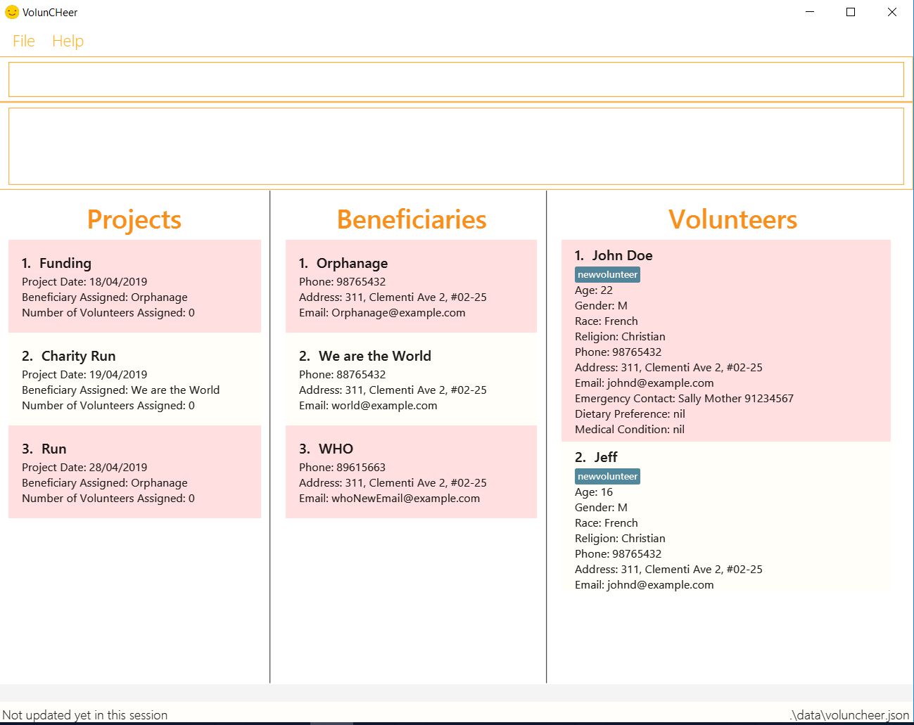

By: CS2113T T08-01 Since: Feb 2019 Licence: MIT
- 1. Introduction
- 2. Quick Start
- 3. Features
- 3.1. Viewing help :
help - 3.2. Adding a project:
addProject - 3.3. Adding a volunteer:
addVolunteer - 3.4. Adding a beneficiary:
addBeneficiary - 3.5. Editing a beneficiary:
editBeneficiary - 3.6. Listing all beneficiary:
listBeneficiary - 3.7. Locating beneficiaries by name:
findBeneficiary - 3.8. Listing all projects :
listProject - 3.9. Listing all volunteers :
list - 3.10. Editing a project :
editProject - 3.11. Editing a volunteer :
editVolunteer - 3.12. Locating volunteers by name:
find - 3.13. Deleting a project ：
deleteProject - 3.14. Deleting a volunteer :
deleteVolunteer - 3.15. Selecting a volunteer :
select - 3.16. Assigning a beneficiary to project: 'assign'
- 3.17. Mark project as complete: 'complete'
- 3.18. Assigning mapping index to each volunteer :
map - 3.19. Sort volunteers according to PRIORITY_SCORE :
sort - 3.20. Select multiple volunteers from sorted list :
extract(Coming in V1.4) - 3.21. Listing entered commands :
history - 3.22. Undoing previous command :
undo - 3.23. Redoing the previously undone command :
redo - 3.24. Clearing all entries :
clear - 3.25. Export data file:
export - 3.26. Import data file:
import - 3.27. Exiting the program :
exit - 3.28. Saving the data
- 3.29. Attendance taking
[coming in v2.0] - 3.30. Manage funding and sponsorships
[coming in v2.0]
- 3.1. Viewing help :
- 4. FAQ
- 5. Command Summary
1. Introduction
VolunCheer is a desktop application for project managers who wish to keep track of their ongoing / upcoming projects as well as their beneficiary and volunteer pool.
You can also use VolunCHeer to filter out suitable volunteers based on their data stored in the system. VolunCHeer is The VolunCHeer Application is for project managers or directors who require a system to keep track of their ongoing projects and the volunteer pool. VolunCheer is optimised for users who prefer a Command Line Interface (CLI) while still being able to view important data on the Graphical User Interface(GUI). VolunCHeer will save you the need for multiple documents and folders just to store volunteer/beneficiary information. It also removes the need to track large amount of volunteer data to fit selection criterias using traditional methods such as Excel.
Wish to know more? Click on Section 2. "Quick Start" to get started.
1.1. Overview
Shown below is a quick overview of our VolunCHeer application.
+ image::Ui.png[width="790"]
+
-
Command Box: This is where you type your commands.
-
Command Result: This shows the result of command execution, useful tips and error messages are also shown here.
-
Project List: This shows the list of projects currently in VolunCHeer.
-
Beneficiary List: This shows the list of beneficiaries currently in VolunCHeer.
2. Quick Start
-
Ensure you have Java version
9or later installed in your Computer. -
Download the latest
VolunCHeer.jarhere. -
Copy the file to the folder you want to use as the home folder for our VolunCHeer Application.
-
Double-click the file to start the app. The GUI should appear in a few seconds.
 -
Type the command in the command box and press Enter to execute it.
e.g. typinghelpand pressing Enter will open the help window. -
Some example commands you can try:
-
list: lists all contacts -
addProjectn/Project Sunshine d/20190320: adds a project named "Project Sunshine" in the project list. -
deleteProject2: deletes the 2nd project portfolio in the current list of projects. -
exit: exits the app
-
-
Refer to Section 3, “Features” for details of each command.
3. Features
Command Format
-
Words in
UPPER_CASEare the parameters to be supplied by the user e.g. inadd n/NAME,NAMEis a parameter which can be used asadd n/John Doe. -
Items in square brackets are optional e.g
n/NAME [t/TAG]can be used asn/John Doe t/friendor asn/John Doe. -
Items with
… after them can be used multiple times including zero times e.g.[t/TAG]…can be used ast/friend,t/friend t/familyetc. -
Parameters can be in any order e.g. if the command specifies
n/NAME p/PHONE_NUMBER,p/PHONE_NUMBER n/NAMEis also acceptable.
3.1. Viewing help : help
Format: help
3.2. Adding a project: addProject
Adds a new project
Format: addProject n/PROJECT_NAME d/DATE
Examples:
-
addProject n/Charity Run d/081219
3.3. Adding a volunteer: addVolunteer
Adds a volunteer to the volunteer pool
Format: addVolunteer n/NAME y/AGE g/gender r/race rg/religion a/ADDRESS e/EMAIL p/PHONE_NUMBER
ec/EMERGENCY_CONTACT dp/DIETARY_PREFERENCE m/MEDICAL CONDITION [t/TAG]…
| A volunteer can have any number of tags (including 0) |
Examples:
-
addVolunteer n/John Doe y/18 g/male r/eurasian rg/nil a/John street, block 123, #01-01 e/johnd@example.com p/98765432 ec/Mary, Mother, 92221111 dp/vegetarian m/asthma -
`addVolunteer n/Sarah Soh y/22 g/female r/chinese rg/buddhist a/betsy ave 6, 02-08 e/sarah08@example.com p/92345678 ec/Johnny, Husband, 81234568
3.4. Adding a beneficiary: addBeneficiary
Adds a beneficiary to the list of Beneficiaries
Format: `addBeneficiary n/NAME a/ADDRESS e/EMAIL p/PHONE_NUMBER `
Examples:
-
addBeneficiary n/Orphanage p/98765432 e/Orphanage@example.com a/311, Clementi Ave 2, #02-25
Consideration:
-
The beneficiary will be used to assign to a project, this means that the project will benefit this beneficiary, i.e. Orphanage Home, Nursing home, etc.
-
When add a new beneficiary, the project lists assigned to it will be empty. You can assign projects to it by assign command stated below.
3.5. Editing a beneficiary: editBeneficiary
Edits a beneficiary to the list of Beneficiaries
Format: `editBeneficiary INDEX (must be a positive integer) [n/NAME] [p/PHONE] [e/EMAIL] [a/ADDRESS] `
Examples:
-
editBeneficiary 1 n/Old Folk Home p/91234567
Consideration:
-
When a beneficiary is edited, the data of the beneficiary in its attached projects is in sync, meaning that that data is automatically updated in the mentioned projects.
3.6. Listing all beneficiary: listBeneficiary
Shows a list of all Beneficiaries in the beneficiary pool.
Format: listBeneficiary
Consideration: * The command can be used to get back to full list after several commands changing the list.
3.7. Locating beneficiaries by name: findBeneficiary
Finds beneficiaries whose names contain any of the given keywords.
Format: findBeneficiary KEYWORD [MORE_KEYWORDS]
Examples:
-
find Nursing
ReturnsNursing HomeandNursing Center
3.8. Listing all projects : listProject
Shows a list of all projects.
Format: listProject
3.9. Listing all volunteers : list
Shows a list of all volunteers in the volunteer pool.
Format: list
3.10. Editing a project : editProject
Edits an existing project
Format: editProject PROJECT_NAME [n/NAME] [d/DATE]…
Examples:
-
editProject Charity Run d/20190301
Edits the date of the project to be '20190301'.
3.11. Editing a volunteer : editVolunteer
Edits an existing volunteer in the volunteer list.
Format: edit INDEX [n/NAME] [y/AGE] [g/GENDER] [r/RACE] [rg/RELIGION][p/PHONE] [a/ADDRESS] [e/EMAIL]
[ec/EMERGENCYCONTACT] [dp/DIETARYPREFERENCE] [mc/MEDICALCONDITION] [[t/TAG]…
Examples:
-
editVolunteer 1 p/91234567 e/johndoe@example.com
Edits the phone number and email address of the 1st volunteer to be91234567andjohndoe@example.comrespectively. -
editVolunteer 2 n/Betsy Crower t/
Edits the name of the 2nd volunteer to beBetsy Crowerand clears all existing tags.
3.12. Locating volunteers by name: find
Finds volunteers whose names contain any of the given keywords.
Format: find KEYWORD [MORE_KEYWORDS]
Examples:
-
find John
ReturnsjohnandJohn Doe -
find Betsy Tim John
Returns any volunteer having namesBetsy,Tim, orJohn
3.13. Deleting a project ： deleteProject
Deletes the specified project from the application.
Format: deleteProject INDEX
3.14. Deleting a volunteer : deleteVolunteer
Deletes the specified volunteer from the volunteer list.
Format: delete INDEX
Examples:
-
list
delete 2
Deletes the 2nd volunteer in the volunteer list. -
find Betsy
delete 1
Deletes the 1st volunteer in the results of thefindcommand.
3.15. Selecting a volunteer : select
Selects the volunteer identified by the index number used in the displayed volunteer list.
Format: select INDEX
Examples:
-
list
select 2
Selects the 2nd volunteer in the volunteer list. -
find Betsy
select 1
Selects the 1st volunteer in the results of thefindcommand.
3.16. Assigning a beneficiary to project: 'assign'
Assigns a beneficiary identified by the index number used in the displayed beneficiary list to a project matched
by project title entered.
Format: assign PROJECT_TITLE, i/INDEX
3.17. Mark project as complete: 'complete'
Marks project with at index "INDEX" as complete.
Format: complete i/INDEX
3.18. Assigning mapping index to each volunteer : map
Assigns the volunteers with points 3, 2, 1 according to the selection criteria set by the user.
Format: map t/(POINTS)(CRITERIA) t/(POINTS)(CRITERIA) t/(POINTS)(CRITERIA)
Examples:
-
map y/3>18 r/2chinese m/1NILGives volunteers above the AGE of 18 3 points, RACE chinese 2 points and MEDICAL_CONDITION of NIL 1 point. -
map m/3NILOnly gives volunteers with no MEDICAL_CONDITION 3 points.
3.19. Sort volunteers according to PRIORITY_SCORE : sort
Sorts the volunteers from highest PRIORITY_SCORE to lowest PRIORITY_SCORE.
Format: sort
3.20. Select multiple volunteers from sorted list : extract (Coming in V1.4)
Format: extract [a][b]
Examples:
*extract [1][20]
Extracts the first 20 volunteers in the sorted list.
*extract [5][15]
Extracts volunteer number 5 to 15 in the list.
3.21. Listing entered commands : history
Lists all the commands that you have entered in reverse chronological order.
Format: history
|
Pressing the ↑ and ↓ arrows will display the previous and next input respectively in the command box. |
3.22. Undoing previous command : undo
Restores the VolunCHeer application to the state before the previous undoable command was executed.
Format: undo
|
Undoable commands: those commands that modify the VolunCHeer application’s main content ( |
Examples:
-
delete 1
list
undo(reverses thedelete 1command) -
select 1
list
undo
Theundocommand fails as there are no undoable commands executed previously. -
delete 1
clear
undo(reverses theclearcommand)
undo(reverses thedelete 1command)
3.23. Redoing the previously undone command : redo
Reverses the most recent undo command.
Format: redo
Examples:
-
delete 1
undo(reverses thedelete 1command)
redo(reapplies thedelete 1command) -
delete 1
redo
Theredocommand fails as there are noundocommands executed previously. -
delete 1
clear
undo(reverses theclearcommand)
undo(reverses thedelete 1command)
redo(reapplies thedelete 1command)
redo(reapplies theclearcommand)
3.24. Clearing all entries : clear
Clears all entries from the specific list requested by user.
Format: clear
3.25. Export data file: export
Exports the saved data in a csv file.
Format: 'export'
3.26. Import data file: import
Imports csv file saved in local folder.
Format: 'import FILE_DIRECTORY'
3.27. Exiting the program : exit
Exits the program.
Format: exit
3.28. Saving the data
All data for the application are saved in the hard disk automatically after any command that changes the data.
There is no need to save manually.
3.29. Attendance taking [coming in v2.0]
Track attendance of the volunteers and award frequent volunteers with certificates or promote to team leader.
3.30. Manage funding and sponsorships [coming in v2.0]
Manage funds and sponsors for individual projects and track project spending.
4. FAQ
Q: How do I transfer my data to another Computer?
A: Install the app in the other computer and overwrite the empty data file it creates with the file that contains the data of your previous VolunCHeer application folder.
5. Command Summary
-
AddProject
addProject n/PROJECT_TITLE d/DATE b/BENEFICIARY [t/TAG]…
e.g.addProject n/Charity Run d/081219 b/Sunshine Old Folks Home -
AddVolunteer
addVolunteer n/NAME y/AGE a/ADDRESS e/EMAIL p/PHONE_NUMBER g/EMERGENCY_CONTACT r/RACE d/DIETARY_PREFERENCE m/MEDICAL CONDITION [t/TAG]…
e.g.addVolunteer n/John Doe y/18 a/John street, block 123, #01-01 e/johnd@example.com p/98765432 g/98292998 r/chinese d/vegetarian m/asthma -
AddBeneficiary
addBeneficiary n/NAME a/ADDRESS e/EMAIL p/PHONE_NUMBER v/VOLUNTEERS_REQUIRED [t/TAG]…
e.g.addBeneficiary n/Sunshine Old Folks Home a/sunshine ave 5 e/sunny@oldfolks.sg p/67580392 v/20 -
List :
list -
EditProject
editProject PROJECT_NAME [n/NAME] [d/DATE] [b/BENEFICIARY] [t/TAG]…
e.g.editProject Charity Run d/010319 -
EditVolunteer
edit INDEX [n/NAME] [p/PHONE] [e/EMAIL] [a/ADDRESS] [t/TAG]…
e.g.editVolunteer 1 p/91234567 e/johndoe@example.com -
Find :
find KEYWORD [MORE_KEYWORDS]
e.g.find James Jake -
DeleteProject :
delete PROJECT_TITLEe.g.delete Charity Run -
DeleteVolunteer :
delete INDEX
e.g.delete 3 -
Select :
select INDEX
e.g.select 2 -
Map
map t/SELECTION t/SELECTION t/SELECTION
e.g.map y/18 > r/chinese m/NIL -
Sort
sort -
Extract
extract VOLUNTEERS_REQUIRED+ e.g.extract 20 -
History :
history -
Undo :
undo -
Redo :
redo -
Clear :
clear -
Export :
export -
Import :
import -
Exit * :
exit -
Help :
help